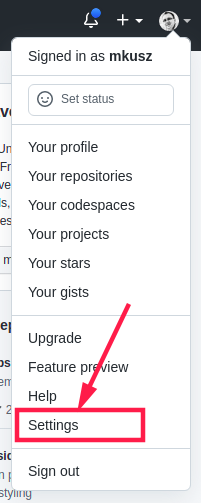
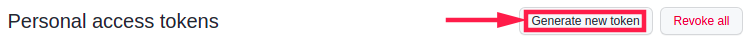
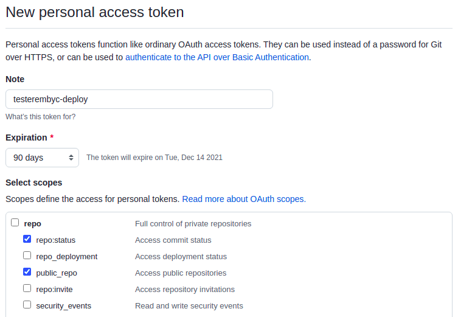
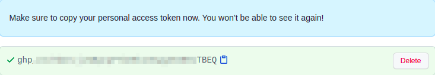
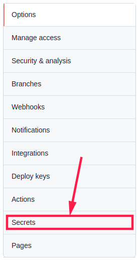
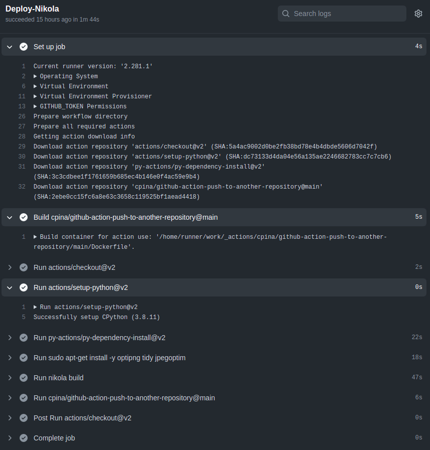

CI/CD na przykładzie GitHub Actions

Jako tester, szczególnie automatyzujący, bardzo często spotkamy się z zagadnieniami związanymi z tzw. continuous delivery oraz continuous integration, czyli w skrócie CI/CD. Jednym z najbardziej popularnych narzędzi, wspomagających ten proces, jest niewątpliwie Jenkins. Ma on jednak pewną wadę, tzn. trzeba go albo zainstalować na własnym serwerze, albo zapłacić zewnętrznej firmie, która udostępni nam Jenkinsa jako usługę typu SaaS (Software as a Service). W większości firm obsługą narzędzi CI/CD zajmuje się zespół DevOps, jednak w małych firmach lub w przypadku projektów robionych po godzinach w ramach nauki, fajnie byłoby móc zautomatyzować sobie część zadań i nie koniecznie ponosić za to dużych opłat. Jedną z takich opcji jest GitHub Actions.
W poniższym wpisie zajmę się pokazaniem jak ja wykorzystuje to narzędzie przy tworzeniu tego bloga oraz omówię możliwości wykorzystania go w testach automatycznych. Zapraszam więc do dalszej lektury.
GitHub Actions¶
Jak już powyżej napisałem, GitHub Actions umożliwia automatyzację procesu CI/CD. Proces ten powiązany jest z kodem źródłowym aplikacji, który przechowywany jest w repozytorium git na stronie GitHub. Samo GitHub Actions jest jedną z kilku funkcjonalności dostępnych w ramach repozytorium. Są to między innymi:
- code - repozytorium git do przechowywania kodu,
- issues - zarządzenia błędami,
- pull requests - zarządzanie zmianami w kodzie,
- projects - zarządzanie projektem,
- wikis - baza wiedzy,
- pages - hosting statycznej strony www,
Jest też kilka innych, mniej istotnych. Do tworzenia tego bloga, sam wykorzystuję kilka z powyższych.
Czy GitHub jest jedyną platformą, która posiada powyższe funkcjonalności? Oczywiście, że nie. Jedną z alternatyw, która posiada niemal identyczną funkcjonalność, jest GitLab.
Istnieje również wspomniany wcześniej Jenkins, jednak jest on narzędzie stricte do automatyzacji procesu CI/CD i nie posiada np. swojego repozytorium git.
Pomiędzy GitHub oraz GitLab istnieją pewne różnice jednak większość z nich to kwestia kosmetyczne. Są również pewne mniej lub bardziej istotne różnice, ale w codziennym użytkowaniu, nie zawsze są one zauważalne. Sam używam obydwu, ale wynika to między innymi z faktu, że jeden z moich klientów, używa właśnie GitLaba. Osobiście bardziej preferuję GitHuba.
O tym, czym są pojedyncze akcje oraz jak to konkretnie działa, opiszę poniżej, w punkcie Konfiguracja GitHub Actions.
Blog na GitHubie?¶
Zapewne zastanawiasz się, jak wykorzystuje GitHuba i jego repozytorium git do tworzenia tego bloga? Najbardziej oczywista sprawa to przechowywanie kodu źródłowego. Nie jest to jednak jedyna funkcjonalność, z jakiej korzystam.
Podejmując decyzję o rozpoczęciu blogowania, rozważałem kilka dróg, jakich narzędzi używać oraz gdzie hostować samego bloga. Opcje jakie rozważyłem to:
- WordPress + płatny hosting - sam Wordpress jest sprawdzoną platformą i ciągle jeszcze rozwijaną, jednak mnogość pluginów (większość dobrych jest dodatkowo płatnych), możliwości konfiguracji oraz przeogromny wybór skórek potrafią na początku przytłoczyć. Dodatkowo dochodzi koszt hostingu oraz zakupu ułatwiających życie pluginów oraz zarządzanie hostingiem, wcale nie ułatwiają podjęcia takiej decyzji. Największą zaletą jest posiadanie opublikowanych materiałów na własnej platformie, a więc w przypadku, np. zmiany hostingu, da się łatwo przeprowadzić migrację.
- Blogger.com - darmowa platforma służąca do publikacji blogów, należąca do Google. Jest to platforma, która dostarcza sporą ilość funkcjonalności, która w zupełności wystarcza do prowadzenia własnego bloga. Największe wady tego rozwiązania to zamknięta platforma, problem przy ewentualnej migracji oraz ryzyko usunięcia bloga przez Google,
-
Utworzenie bloga z wykorzystaniem tzw. static pages, czyli strony, której kod HTML generowany jest na lokalnym komputerze, a później przesyłany na dowolny hosting. Prostota tego rozwiązania ma kilka niewątpliwych zalet:
- nie wymaga bazy danych,
- łatwo edytować szablon strony,
- strona szybko się łąduje (brak połączeń z bazą danych, itp.),
- łatwo wykonać backup,
Są też pewne wady tego rozwiązania:
- konieczność delegacji komentarzy do postów do zewnętrznej usługi,
- brak edytora WYSiWYG.
Powyższe przykłady narzędzi nie wyczerpują listy dostępnych narzędzi. Zostały one tutaj wyszczególnione, aby pokazać, jakie są ich potencjalne wady, zalety oraz koszty.
Wybór narzędzi¶
Ponieważ blog w założeniach miał generować minimalne koszty, wybrałem opcję z wykorzystaniem static pages. Narzędzia, jakich użyłem to:
- Nikola - jako silnik do tworzenia statycznych stron www, który funkcjonalnością i sposobem zarządzania treścią (podział na posty i strony) jest bardzo zbliżony do WordPressa. Dodatkowo napisany jest w Pythonie, a więc będę miał możliwość w miarę łatwego modyfikowania pewnych mechanizmów lub tworzenia pluginów, jeśli zajdzie taka potrzeba. Poza tym dostępne są już pluginy stworzone przez innych oraz istnieje możliwość tworzenia treści z wykorzystaniem plików w formacie Markdown (dlaczego to takie ważne, opiszę poniżej).
- GitHub Pages - wspomniałem o tym powyżej. Jest to darmowy hosting statycznych stron www, który jest częścią repozytorium git, w którym mogę przechowywać cały silnik oraz treści opisane w poprzednim punkcie.
- Obsidian - to narzędzie do zarządzania wiedzą, stworzone z myślą o zarządzaniu własnymi notatkami przy użyciu metody Zettelkasten (można też spotkać się z pojęciem tzw. second brain). Samo narzędzie nie narzuca struktury notatek, ale umożliwia, wspomaga oraz wizualizuje schemat połączeń. W przypadku tworzenia bloga, gdzie wpisy potrafią odnosić się do informacji umieszczonych w innych wpisach, takie wspomaganie, jest bardzo cenne oraz mocno przyspiesza pracę. Dodatkowo wszystkie pliki w tym narzędziu są plikami we wspomniany wcześniej formacie Markdown co idealnie zgrywa się ze wsparciem tego formatu przez Nikolę.
- Disqus - zewnętrzna usługa, dostarczająca mechanizm komentarzy dla poszczególnych wpisów.
- ActiveCampaign - narzędzie do zarządzania listą mailową.
Koszty prowadzenia bloga¶
Zapewne zastanawiasz się, jakie są koszty utrzymania bloga? Otóż są on stosunkowo nie duże, bo tak naprawdę płacę za utrzymanie domeny testerembyc.pl oraz miesięczna opłata za narzędzie do zarządzania listą mailową (planuję zmianę narzędzia, aby z kosztami zejść jeszcze niżej). Całość zawiera się średnio w okolicach 70zł/miesiąc. Czy to dużo? Nie są to ogromne koszty, ale gdybym do tego doliczył koszt dowolnego (rozsądnego) hostingu dla WordPress, koszty urosłyby do około 120-150zł/miesiąc, a to już zaczyna być kwota mocno zauważalna w budżetach niektórych osób.
Jak wykorzystać GitHub Actions?¶
Aby wytłumaczyć, po co mi GitHub Actions, muszę opisać jeszcze jeden aspekt, a dokładniej mechanizm działania narzędzia do generowania statycznej strony www oraz tego, jak działa GitHub Pages.
Generacja statycznej strony z użyciem Nikola¶
Samego procesu konfiguracji całego narzędzia nie będę opisywał, ponieważ musiałbym poświęcić na to zupełnie oddzielny wpis. Chodzi tutaj bardziej o kwestie, jaka jest struktura katalogów i gdzie w niej znajduje się wynikowa, statyczna strona HTML.
- cache - to pliki cache powstające podczas generowoania statycznej strony, które przyśpieszają proces generacji i zapobiegają regeneracji podstron, które się nie zmieniły,
- images - folder z wszelkiej maści plikami graficznymi,
- pages - pełne strony (np. strone o mnie),
- plugins - zainstalowane dodatkowe pluginy,
- posts - posty, jak ten, który właśnie czytasz,
- themes - skórka bloga, czyli opis wyglądu.
- docs - wynikowa statyczna strona www, którą generuje się przy pomocy polecenia
nikola build.
Jak więc widzisz, wynikowe pliki znajdują się w podfolderze, a więc po wygenerowaniu będą częścią repozytorium git. Można byłoby się pokusić o taką konfigurację, aby wynikowy folder był poza tą strukturą, ale każdy upload strony, wymagałby wykonywania ręcznych commitów do 2 repozytoriów.
GitHub Pages¶
Wcześniej wspomniałem, że ta funkcjonalność w ramach repozytorium, pozwala na hostowanie statycznych stron www. Wymaga ona jednak, aby samo repozytorium było publicznie dostępne.
Gdzie więc jest problem?
Publiczne repozytorium¶
Problemów w takiej konfiguracji jest kilka, ale sprowadzają się one głównie do faktu, że hostowana strona musi właśnie znajdować się w publicznym repozytorium. Prowadzi to do ujawnienia danych z wszelkich projektów, nad którymi pracuję i gromadzę materiały.
Dodatkowo w ramach repozytorium zacząłem prowadzić swoją tablicę kanban z planami dotyczącymi publikacji na blogu oraz swoim kanale YouTube. Posiadanie materiałów oraz planów ich publikacji w jednym miejscu bardzo ułatwia mi pracę, a dodatkowo chciałbym, aby nie były one widoczne do czasu ukończenia prac nad nimi i samej publikacji. Aby to osiągnąć, dobrze byłoby odseparować od siebie część związaną z narzędziami oraz plikami źródłowymi od wynikowej pracy.
Dwa repozytoria¶
Najłatwiejszym sposobem osiągnięcia powyższego założenia, jest utworzenie 2 repozytoriów:
- repozytorium prywatne, gdzie będą znajdowały się wszystkie materiały oraz pliki źródłowe,
- repozytorium publiczne, które będzie zawierało tylko wynikowe pliki, które tworzą statyczną stronę z blogiem i z którego następuje hosting bloga przy użyciu GitHub Actions.
Dodatkowo ideałem byłoby, aby statyczne pliki tworzyły się w momencie, gdy zmodyfikowany zostanie główny branch w prywatnym repozytorium. Następnie powinien nastąpić automatyczny commit tak utworzonym plików do publicznego repozytorium.
W tym miejscu dochodzimy do punktu, gdzie GitHub Actions wkraczają na scenę.
Konfiguracja GitHub Actions¶
Zanim zaczniemy wspólną zabawę, chciałbym uświadomić Ci jedną rzecz, tzn. ten wpis nie pokrywa pełnego zakresu możliwości oraz nie omawia wszelkich możliwych aspektów konfiguracji GitHub Actions. Jest to temat bardzo obszerny i aby to zrobić, należałoby przedstawić go w postaci kursu. Jeśli temat zainteresuje Cię, polecam zapoznać się z dokumentacją znajdującą się na stronie GitHub.
Workflow¶
GitHub Actions wykonywane są pod wpływem jakiegoś wydarzenia (tzw. event-driven). Aby wiedzieć, jakie wydarzenie jest wyzwalaczem akcji (tzw. trigger) oraz jaka akcja musi się wykonać, potrzebny jest nam jakiś kontener, który będzie przetrzymywał cały ten opis. Takim konterem w sensie logicznym jest właśnie workflow. Ponieważ cały czas funkcjonujemy w granicach repozytorium git, najprostszą i najbardziej logiczną formą przetrzymywania takie opisu będzie jakiś plik tekstowy. W przypadku GitHub Actions taki plik powinien być w formacie YAML.
Dodatkowo taki plik powinien się znajdować w odpowiednim miejscu struktury katalogów w repozytorium, tak aby narzędzia, które odpowiadają za wykonanie akcji, wiedziały gdzie szukać ich opisu.
W prywatnym repozytorium z kodem bloga musiałem więc utworzyć strukturę katalogów .github/workflow oraz w nim umieścić plik YAML. Ja ten plik po prostu nazwałem deploy-nikola.yml.
Zawartość tego pliku posiada 3 sekcje:
name- zawiera nazwę danego workflow,on- zawiera konfigurację wyzwalaczy, które spowoduje uruchomienie danego workflow (może być ich więcej niż jedne),jobs- zawiera konfigurację danego zadania.
Nazwa (name)¶
Ponieważ sekcja name jest bardzo prosta i oznacza po prostu nazwę danego workflow. W formacie YAML wygląda to następująco:
name: deploy-nikola
Wyzwalacze (on)¶
Pełna lista wyzwalaczy znajduje się tutaj. Ja w swoim workflow, wykorzystałem tylko jeden, czyli push, który skonfigurowałem tak, aby działał, tylko w momencie, gdy zmieni się zawartość głównego brancha mojego repozytorium. W formacie YAML wygląda to następująco:
on: push: branches: - main
W przypadku starszych repozytoriów nazwa głównego brancha może być inna (master). Powód zmiany nazwy doczekał się szerszego opisu w jednym z oficjalnych repozytoriów samego GitHuba.
Dodatkowo w przyszłości rozważę również dodanie dodatkowego wyzwalacza w postaci uruchamiania workflow każdego dnia o wybranej godzinie. Pozwoli mi to na skorzystanie z możliwości publikacji artykułów z przyszłą datą. Przyjmując, że chciałbym, aby strona przebudowywała się codziennie o godzinie 10:00, taki wyzwalacz wyglądałby tak:
on: schedule: - cron: '0 10 * * *'
Zauważ, że składnia zgodna jest ze składnią tzw. cron, czyli tzw. planisty (scheduler). Składnia prezentuje się następująco:
┌───────────── minuta (0 - 59) │ ┌───────────── godzina (0 - 23) │ │ ┌───────────── dzień miesiąca (1 - 31) │ │ │ ┌───────────── miesiąc (1 - 12 lub JAN-DEC) │ │ │ │ ┌───────────── dzień tygodnia (0 - 6 lub SUN-SAT) * * * * *
Istnieją również pewne znaki specjalne, modyfikujące powyższe wartości:
*- dowolna wartość,,- separator wartości, np. uruchom codziennie o godzinie 10:00 i 12:00:0 10,12 * * *,-- zakres wartości od/do, np. uruchom o każdej pełnej godzinie między 15, a 20:0 15-20 * * *,\- wartość krokowa, np. uruchamiaj co 15 minut:0/15 * * * *.
Zadanie (job)¶
Konfiguracja konkretnego zadania to może być bardzo krótka (np. usunięcie danego katalogu) lub bardzo złożona. Poniżej znajduje się moja konfiguracja i na jej przykładzie omówię, jak się buduje takie zadania i co one zawierają.
jobs: Deploy-Nikola: runs-on: ubuntu-latest steps: - name: Checkout Git repository uses: actions/checkout@v2 - name: Install Python 3.8 uses: actions/setup-python@v2 with: python-version: '3.8' - name: Install Python libraries from requirements.txt uses: py-actions/py-dependency-install@v2 - name: Install missing Ubuntu packages run: sudo apt-get install -y jpegoptim optipng tidy - name: Build Nikola static site for testerembyc.pl run: nikola build - name: Commit static site to repository with GitHub Pages enabled uses: cpina/github-action-push-to-another-repository@main env: API_TOKEN_GITHUB: ${{ secrets.API_TOKEN_GITHUB }} with: user-name: "user" user-email: user@email.com source-directory: "docs" destination-github-username: "user" destination-repository-name: "public-repo" target-branch: main
Dużo tego, ale prześledźmy wspólnie, co tu się dzieje i co oznacza. Aha. Żeby nie było, dane w ostatnich 6 linijkach zostały zmienione i nie są prawdziwymi danymi.
jobs: Deploy-Nikola: runs-on: ubuntu-latest steps:
Tu raczej nie będzie problemu: - jobs - oznacza, że w tym miejscu znajduje się konfiguracja naszego zadania, - Deploy-Nikola - to po prostu nazwa naszego zadania, - runs-on: ubuntu-latest - definiuje, w jakim systemie operacyjnym dane zadanie, a dokładniej jego kroki, mają zostać uruchomione, - steps - kolejne kroki naszego zadania.
Powyższe nie powinno stanowić problemu.
Kroki (steps)¶
Zanim jednak przejdziemy do omawiania samych kroków, zastanówmy się czym, w ogóle one są? Otóż kroki to nic innego jak poszczególne akcje, które muszą zostać wykonane, aby nasze zadanie zostało uznane za ukończone.
Pojedynczy krok składa się:
name- nazwa kroku do wyświetlenia (nie jest wymagane),uses- nazwa predefiniowanej akcji, która zostanie wykonana,env- zmienna środowiskowa, jaka powinna zostać ustawiona w danym kroku,with- dodatkowe dane konfiguracyjne, które zostaną przekazane do predefiniowanej akcji,run- komenda systemowa do wykonania (np.ls -la).
Należy tutaj jeszcze zauważyć kilka rzeczy:
runorazusesnigdy nie występują razem, tzn. albo wykorzystujemyrundo wywołania komendy systemowej, albousesdo wywołania akcji,withwystępuje tylko w połączeniu zuses.
Zauważ, że w przypadku chęci użycia predefiniowanych kroków, to co występuje po uses to tak naprawdę nazwa repozytorium znajdującego się w portalu GitHub. Jako przykład, może zerknać na pierwszy krok, czyli actions/checkout@v2. Czy to oznacza, że możemy takie kroki tworzyć samodzielnie? Oczywiście. Nic nie stoi na przeszkodzie, a cały proces został odpowiednio udokumentowany.
Wracając teraz do analizy poszczególnych kroków, omówię je jako prosty zestaw kolnych akcji, jakie zostaną wykonane, a dopasowanie, która akcja co oznacza, zostawię już Tobie (wierzę, że sobie poradzisz z tym zadaniem):
- Pobierz zawartość repozytorium - należy mieć na uwadze, że dzieje się to w kontekście repozytorium, w którym znajduje się definicja danego workflow, czyli pobieramy dane z prywatnego repozytorium.
- Zainstaluj Pythona 3.8 - zauważ, że w przypadku tej akcji, określamy jaką o jaką wersję Pythona nam chodzi. Ponieważ na komputerze, na którym tworzę tego bloga, mam zainstalowanego Pythona 3.8, użyłem tej samej wersji, aby zminimalizować ilość ewentualnych błędów.
- Zainstaluj biblioteki z listy znajdujacej się w pliku
requirements.txt. - Zainstaluj brakujące narzędzia w systemie - ponieważ korzystamy z Ubuntu, wykorzystane zostało polecenie systemowe
apt-get, które służy właśnie do instalacji pakietów z oprogramowaniem. - Zbuduj statyczną stronę - w tym celu wywołane zostanie polecenie służące do tego celu.
- Zakomituj statyczną stronę do publicznego repozytorium z włączoną usługą GitHub Pages - zauważ, że w tym kroku, jest dużo danych konfiguracyjnych, oraz tworzona jest zmienna środowiskowa, w której przechowany zostanie token służący do dostępu do API GitHuba. Token ten służy do autoryzacji oraz przeprowadzenia samego procesu commitu do repozytorium. Aby móc używać tokenu, należy go najpierw wygenerować, a następnie umieścić w odpowiednim miejscu,
Cały Workflow¶
Cały plik deploy-nikola.yml wygląda następująco:
name: deploy-nikola on: push: branches: - master jobs: Deploy-Nikola: runs-on: ubuntu-latest steps: - name: Checkout Git repository uses: actions/checkout@v2 - name: Install Python 3.8 uses: actions/setup-python@v2 with: python-version: '3.8' - name: Install Python libraries from requirements.txt uses: py-actions/py-dependency-install@v2 - name: Install missing Ubuntu packages run: sudo apt-get install -y jpegoptim optipng tidy - name: Build Nikola static site for testerembyc.pl run: nikola build - name: Commit static site to repository with GitHub Pages enabled uses: cpina/github-action-push-to-another-repository@main env: API_TOKEN_GITHUB: ${{ secrets.API_TOKEN_GITHUB }} with: user-name: "user" user-email: user@email.com source-directory: "docs" destination-github-username: "user" destination-repository-name: "public-repo" target-branch: main
Token¶
Token to nic innego jak klucz, dzięki któremu jesteśmy w stanie wykonywać pewne operacje z wykorzystanie REST API portalu GitHub.
Generowanie tokenu¶
Aby wygenerować token, należy być zalogowanym na swoim koncie w portalu GitHub, a następnie przejść do zakładki Settings > Developer settings > Personal access tokens > Generate new token lub po prostu przejść na adres https://github.com/settings/tokens/new (w tym miejscu możemy zostać poproszeni o ponowne podanie naszego hasła).
 Account settings
Dev settings
Personal access token
 Generate new token
Następnie należy wypełnić/zaznaczyć poniższe pola:|
- Note - tutaj podajemy nazwę naszego tokenu,
- Expiration - okres przez jaki nasz token będzie zdatny do użytku,
- Select scopes - zakres uprawnień:
- repo:status - Access commit status
- public_repo - Access public repositiories
oraz kliknąć przycisk Generate token.
Należy pamiętać, że ten zestaw uprawnień jest wystarczający w przypadku akcji commitowania do publicznego repozytorium. Jeśli w swoim workflow, będziesz używać innych akcji, może okazać się, że powyższy zestaw uprawnień bedzie niewystarczający.
 New personal access token
Po wygenerowaniu tokenu, mamy jedyną możliwość skopiowania tokenu, o czym przypomina stosowny komunika. Należy go sobie gdzieś zapisać albo od razu wykorzystać.
 Token
Bezpieczne wykorzystanie tokenu¶
Aby wykorzystać token, musimy zapisać go jako tzw. secret w repozytorium, w którym uruchamiane zostanie tworzone workflow. Secret to nic innego jak zmienna środowiskowa, do której będą miały dostęp wykonywane akcje. Aby utworzyć secret, należy wykonać kilka poniższych kroków w repozytorium.
W moim przypadku musiałem przejść do mojego prywatnego repozytorium, a następnie przejść do zakładki Settings > Secrets > New repository secret.
Repository settings
 Secrets
New repository secret
Następnie należy wypełnić/zaznaczyć poniższe pola:|
- Name - nazwa zmiennej środowiskowej, w moim przypadku było to
API_TOKEN_GITHUB, - Value - wartość zmiennej środowiskowej, w moim przypadku był to wygenerowany wcześniej token,
oraz kliknąć przycisk Add secret.
New secret
Na zakończenie¶
Żeby to wszystko teraz zadziałało, musimy jeszcze umieścić plik deploy-nikola.yml (git commit oraz git push) w repozytorium. Od teraz każdy kolejna zmiana lub dodanie plików do głównego brancha, spowoduje automatyczne uruchomienie utworzonego workflow oraz akcji, jakie zostało w nim ustawione. Podgląd możemy zawsze znaleźć w zakładce Actions naszego repozytorium, a następnie przejść do naszego workflow oraz ostatnio wykonanego uruchomienia workflow.
Actions
 Action Status
Koszty¶
GitHub Actions jest darmowe, ale ma pewne ograniczenie, tzn. w ramach darmowego konta, można wykorzystać maksymalnie 2000 minut, w których czasie każdy tzw. runner, będzie wykonywał akcje opisane w ramach akcji. Ograniczenie to można obejść, jeśli wykorzystamy tzw. self-hosted runners, czyli jeśli runner będzie uruchamiany na naszym serwerze.
GitHub Actions w testach automatycznych?¶
Zapewne po przeczytaniu całego tego wpisu, masz już kilka własnych pomysłów, jak można wykorzystać GitHub Actions w testach automatycznych. Poniżej przedstawiam listę kilku własnych pomysłów. Być może pokrywają się z Twoimi pomysłami, a być może podpowiedzą kilka nowych.
- W niemal identyczny sposób jak powyżej opisany (tzn. z wykorzystaniem GitHub Actions oraz GitHub Pages) można generować raporty z narzędzia, jakim jest Allure.
- Podobnie ma się sprawa z generacją dokumentacji kodu testów automatycznych, np. przy użyciu biblioteki Sphinx.
- Cykliczne uruchamianie testów automatycznych.
- Health check środowiska testowego lub produkcji.
- Tworzenie i odtwarzanie backupu środowiska testowego wraz z danymi testowymi.
- Automatyczne zarządzanie środowiskiem testowym, np. dynamiczne tworzenie środowisk testowych na potrzeby przeprowadzenia testów oraz ich wyłączenie po ich zakończeniu.
- Automatyczne uruchamianie testów np. regresji po deploymencie w celu weryfikacji jego poprawności.
- Uruchamianie unittestów utworzonych dla naszych testów automatycznych.
- Automatyczne generowanie CV do celów rekrutacji (by Jakub Spórna z bloga https://sporna.dev)
Jeśli masz jakiś ciekawy pomysł, którego nie umieściłem na powyższej liście, daj koniecznie znać, a chętnie go dopiszę powyżej z zaznaczeniem kto był autorem tego pomysłu.
Podsumowanie¶
Jeśli udało Ci się dotrzeć do tego miejsca, to gratuluję wytrwałości. Temat CI/CD jest bardzo obszerny i przedstawiony powyżej opis to zaledwie liźnięcie tematu oraz pokazanie, że to wcale nie jest takie trudne. Mam nadzieję, że zachęciłem Cię do zmierzenia się z tym tematem. Jeśli tak to życzę powodzenia, a jeśli nie to zachęcam do spróbowania. Wiedza ta na pewno nie będzie wiedzą bezużyteczną, a jeszcze nie raz w Twojej karierze może okazać się bardzo pomocna, np. podczas rozmowy kwalifikacyjnej lub jako dodatkowy wpis w CV.
Bonus¶
GitHub Actions udostępnia możliwość prezentacji statusu danego workflow w postaci graficznej.
Workflow status
Graficzny status generowany jest w postaci pliku svg dostępnego w unikatowym dla danego repozytorium oraz danego workflow linku. U mnie prezentuje się on następująco https://github.com/mkusz/testerembyc/actions/workflows/deploy-nikola.yml/badge.svg. Aby wykorzystać go np. w pliku README.md, który znajduje się w głównym folderze naszego repozytorium należy skorzystać z odpowiedniej składni, która umieści plik graficzny z danego linku. W moim wypadku wygląda on tak:


{kind=link}
Komentarze
Comments powered by Disqus